Welcome!
Get
Connected
WiFi: wifi network
Password: wifi password
Download
& Install
- Learner files (zip file): http://bit.ly/teenslc-digital-safety
- unzip the learner file (extract all if you’re on a PC)
- open slides.html in the browser to view the slides
- Any Web Browser - FireFox is recommended: https://www.mozilla.org/en-CA/firefox/
Digital Safety and Privacy
Meetup
with[Instructor name]
Brute Force: Time to Crack
| Password Type | Example | Total Combinations | Max Time to Crack (2 billion guesses/sec) |
|---|---|---|---|
| Letters only
Length: 6 |
Secret | 526 ≈ 20 billion | 10 seconds |
| Letters + Numbers
Length: 6 |
S3cret | 626 ≈ 57 billion | 28 seconds |
| L + Num + Symbols
Length: 6 |
$3cRet | 756 ≈ 178 billion | 89 seconds |
| Letters only
Length: 8 |
Password | 528 ≈ 53 trillion | 7.4 hours |
| Letters + Numbers
Length: 8 |
Passw0rd | 628 ≈ 218 trillion | 30 hours |
| L + Num + Symbols
Length: 8 |
P@ssw0rd | 758 ≈ 1 quadrillion | 6 days |
| L + Num + Symbols
Length: 10 |
Superman!1 | 7510 ≈ 5.6 quintillion | 89 years |
| L + Num + Symbols
Length: 12 |
CLCisGreat!1 | 7512 ≈ 31.6 sextillion | Half a million years |
Notes
- The last column is the maximum time it would take to crack a password. On average, it would take about half as much time and even less with more advanced logic.
- The password processing method used in our calculations is called SHA-1, which was widely used by organizations such as LinkedIn. Here's an article about SHA-1 and hashing.
- Some websites will rate limit the number of tries you can make, but not all do. Hackers also commonly bypass this safeguard using an offline attack, which is performed against leaked password hashes, not the actual website.
Other tools and advice
Consider Switching Services
Many popular services may sell your data and/or don’t prioritize your privacy. You may want to try some different options.| If you use... | Consider switching to... |
|---|---|
| Google (Search Engine) |
DuckDuckGo - https://duckduckgo.com/
StartPage - https://www.startpage.com/ |
| Gmail |
FastMail - https://www.fastmail.com/
ProtonMail - https://protonmail.com/ |
| Chrome (Browser) |
FireFox - https://www.mozilla.org/firefox/
Brave - https://brave.com |
| FB Messenger (Chat) |
Signal https://signal.org/
Telegram https://telegram.org/ |
Resources
- More privacy and security focused alternatives can be found here.
Thank you!
Digital Safety and Privacy
Slide presentation created by AC based on Lea Verou's SlideShow and reveal.js.